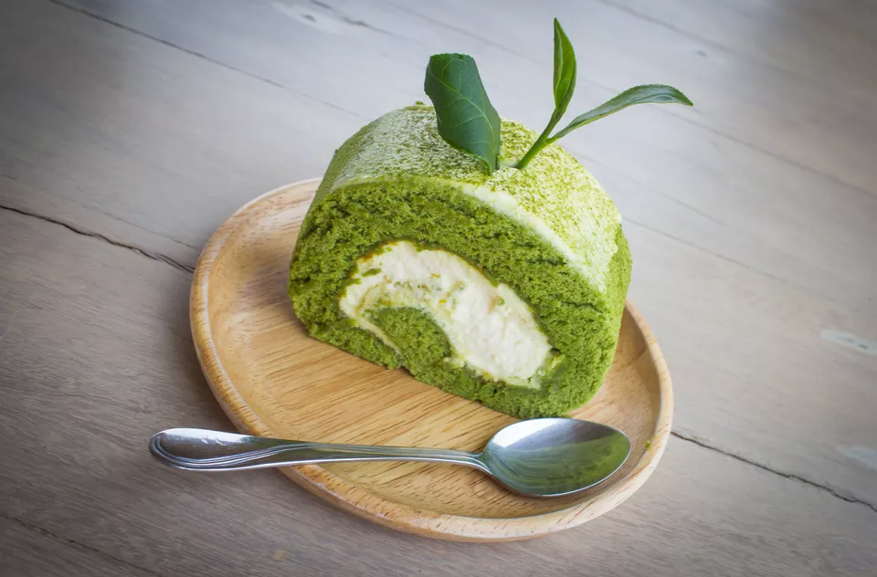

Green Tea Nochka
v
>
Ingredients

List of ingredients
- 3 eggs
- 1/2 cup of superfine sugar.* (You can use less if you prefer for your cake not to be sweet.)
- 1/2 cup of vegetable oil
- 3/4 cup of plain Greek-style yogurt
- 1 teaspoon of vanilla extract
- 1 1/2 cups of cake flour
- 1 teaspoon of baking powder
- 6 teaspoons of green tea powder (nok-cha karu, matcha)
- Cream cheese frosting (optional) (Consider the frosting if you plan to use little to no sugar.)
Steps to Make It
To begin making the cake, turn the oven on and preheat it to 350 F.Then, in a mixing bowl, beat eggs, sugar,
vanilla, and oil together until the resulting mixture is fluffy and light.
Gently stir Greek yogurt into the mixture. This yogurt has a range of health benefits, including high protein
content and probiotics which are great for balancing gut bacteria. Choose the organic variety if it's available
and in your budget range.
After stirring in the yogurt, get a separate bowl, and then sift the flour, baking powder, and green tea powder
together.
Next, gently fold the flour mixture into the wet sugar-yogurt mixture.
Then, pour the resulting cake batter into a greased cake pan, smoothing out the top until level.
Bake the cake for 35 minutes or until the top becomes golden brown and a toothpick comes out clean from the
middle. If there's batter on the pick, keep the cake in the oven for a few more minutes, checking periodically
until it's done.
If you're using cream cheese frosting instead of sugar, wait for the cake to cool down before icing it.
*If you can't find superfine sugar, learn to do-it-yourself.
** NOTE: If you don't have cake flour and need to substitute all-purpose flour in this recipe, then you need to
use LESS all-purpose flour. Use 1.5 cups minus 3 tablespoons of all-purpose flour.